高等数学
概率论与随机过程
刘次华 - 《随机过程》
1. 预备知识
常见随机变量的数学期望、方差和特征函数:
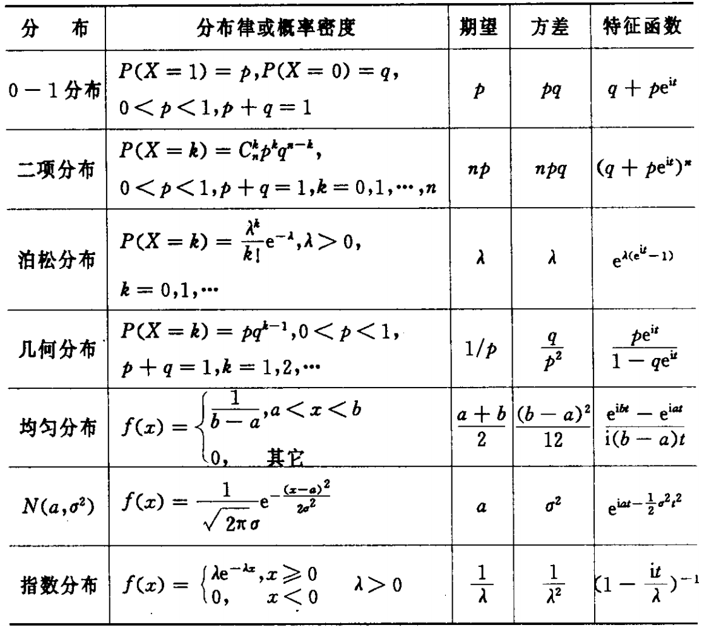
2. 随机过程
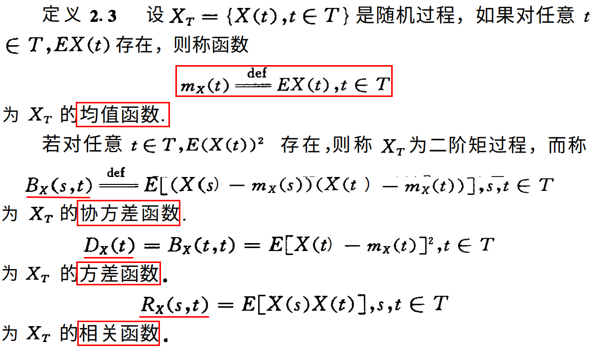
各个函数意义:
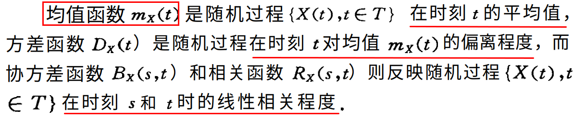
3. 泊松过程

非齐次泊松过程:
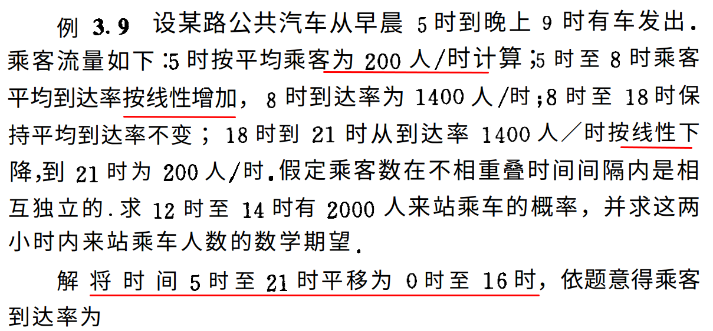
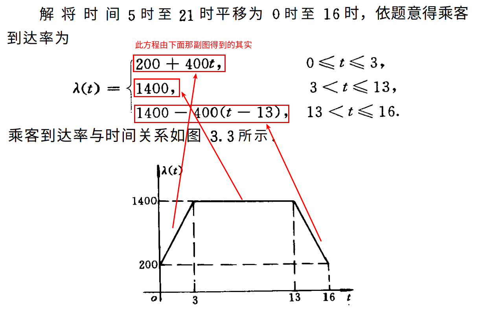
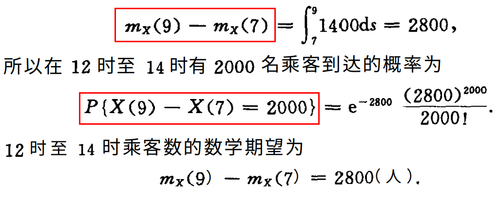
4. 马尔科夫链
- 条件概率:$p_{ij}(n)$ 为马尔科夫链在时刻 $n$ 的一步转移概率。随机游动的质点在时刻 $n$ 处于状态 $i$ 的条件下，下一步转移到状态 $j$ 的概率。如果 $p_{ij}$ 与 $n$ 无关，则称马尔科夫链是齐次的，我们只讨论齐次的。
- 转移概率矩阵:
- 一步转移概率矩阵中任一行元素之和为 1.
- $n$ 步转移概率完全由一步转移概率决定.
- 齐次马尔科夫链的 $n$ 步转移概率是一步转移概率矩阵的 $n$ 次乘方.
- 马尔可夫链的有限维分布完全由它的初始概率和一步转移概率所决定.
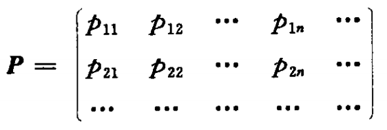
(1) 画出状态转移关系图
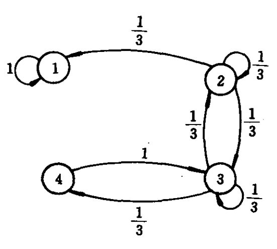
(2) 根据转移关系图写出转移概率矩阵
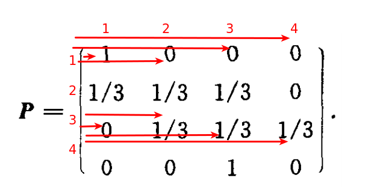
5. 连续时间的马尔科夫链
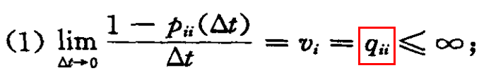
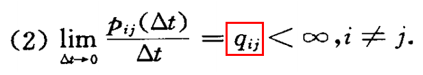
$q_{ij}$ 为齐次马尔科夫过程从状态 $i$ 到状态 $j$ 的转移速率或跳跃强度。
若连续时间齐次马尔可夫链是具有有限状态空间 $I = \{0,1,…,n\}$，则其转移速率可构成以下形式的矩阵:
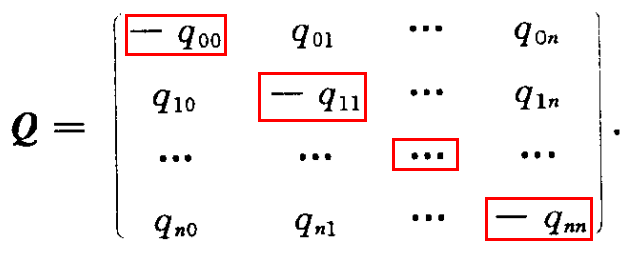
$Q$ 矩阵的每一行元素之和为 0，对角线元素为负或 0.
以如下例题为例:
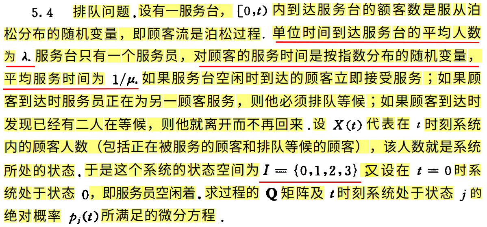
$Q$ 矩阵的求法:
- 人数由 $0$ 变为 $1$ 的概率为 $\lambda$，故 $q_{00}=(1-\lambda)’=-\lambda$
- 人数由 $1$ 变为 $0$ 的概率为 $\mu$，由 $1$ 变为 $2$ 的概率为 $\lambda$，故 $q_{11}=(1-\lambda-\mu)’=-(\lambda+\mu)$
- 以此类推…
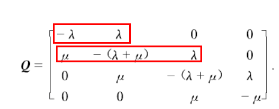
科尔莫戈罗夫方程:
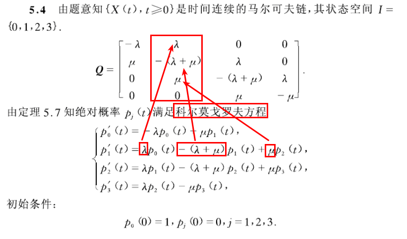
利用 $Q$ 矩阵可以推出任意时间间隔的转移概率所满足的方程组，从而可以求解转移概率。
高等数学
矩阵乘法:

矩阵的本质就是线性方程式，两者是一一对应关系:
下面是一组线性方程式。
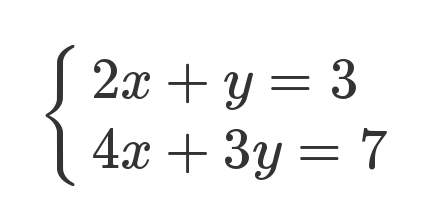
矩阵的最初目的，只是为线性方程组提供一个简写形式。
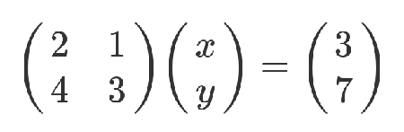
协方差的计算公式和性质:
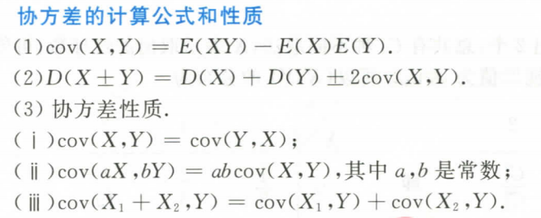
期望的性质:
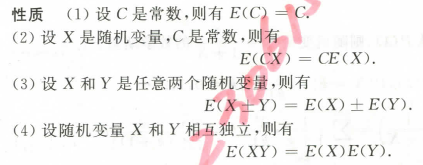
方差的性质:
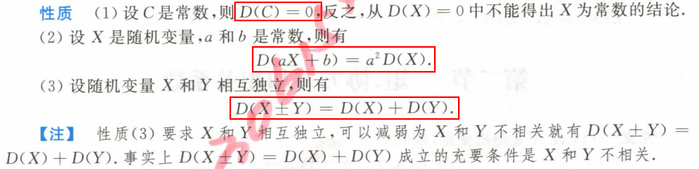